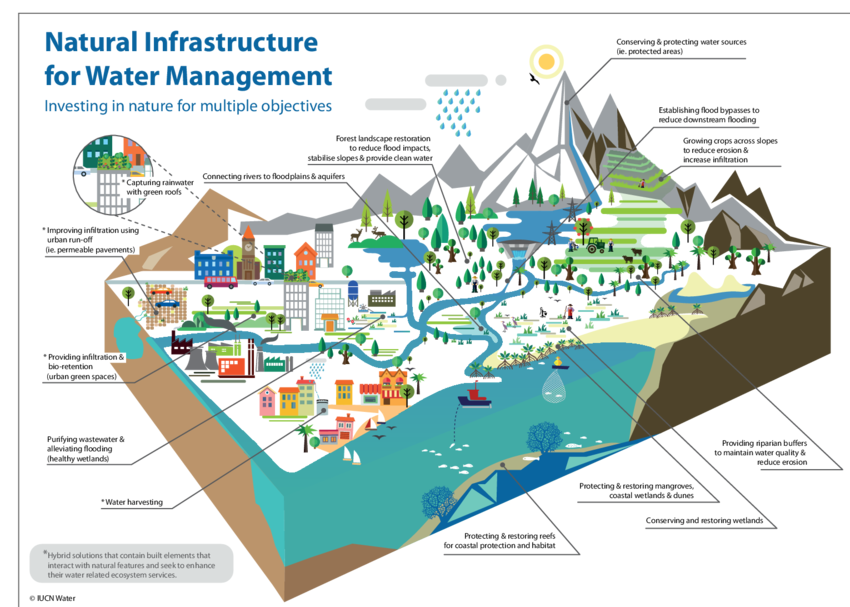
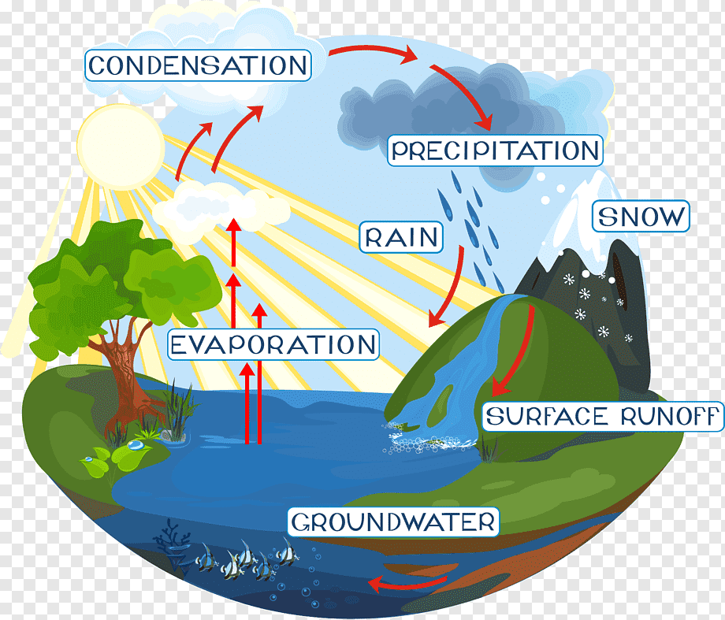
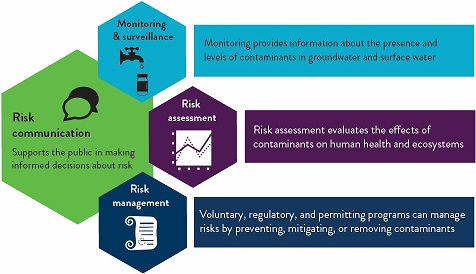

Water management is the control and movement of water resources to minimize damage to life and property and to maximize efficient beneficial use.It involves various practices and techniques aimed at ensuring the sustainable and efficient use of water for different purposes while considering environmental, social, and economic factors.
Importance of Water Management
- Resource Conservation:Proper water management helps conserve freshwater resources, which are essential for various human activities and ecosystems.
- Sustainable Development:Effective water management supports sustainable development by balancing water supply and demand, especially in regions facing water scarcity.
- Ecosystem Health:Maintaining adequate water quantity and quality is crucial for the health and functioning of aquatic ecosystems, including rivers, lakes, wetlands, and coastal areas.
- Climate Resilience:Water management practices can enhance resilience to climate change impacts such as droughts, floods, and shifting precipitation patterns.
- Social Equity:Fair and equitable water allocation and distribution are important for meeting the needs of communities, industries, agriculture, and the environment.
Strategies for Water Management
- Water Conservation:
- Promote water-saving practices in households, industries, and agriculture through efficient technologies, reuse, and recycling.
- Implement water-efficient irrigation techniques such as drip irrigation, micro-sprinklers, and soil moisture sensors in agriculture.
- Water Quality Management:
- Monitor and regulate water quality to prevent pollution from industrial, agricultural, and urban sources.
- Implement wastewater treatment and reuse systems to reduce pollution and enhance water availability.
- Ecosystem Restoration:
- Restore and protect natural water bodies, riparian zones, and wetlands to improve water quality, biodiversity, and ecosystem services.
- Implement watershed management approaches to address land-use impacts on water resources.
- Integrated Water Resource Management (IWRM):
- Adopt IWRM principles to balance water allocation among competing uses, considering social, economic, and environmental aspects.
- Encourage stakeholder participation, collaboration, and governance mechanisms in water management decision-making.
- Climate-Resilient Water Infrastructure:
- Design and upgrade water infrastructure (dams, reservoirs, pipelines) to withstand climate-related risks and ensure reliable water supply.
- Incorporate climate change adaptation measures such as water storage, rainwater harvesting, and flood management.
- Education and Awareness:
- Promote public awareness about water conservation, pollution prevention, and sustainable water use practices.
- Provide training and capacity-building programs for water professionals, policymakers, and communities on water management best practices.



By implementing these strategies and adopting a holistic approach to water management, societies can achieve water security, environmental sustainability, and resilience in the face of water-related challenges.